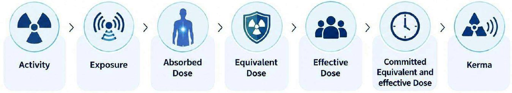
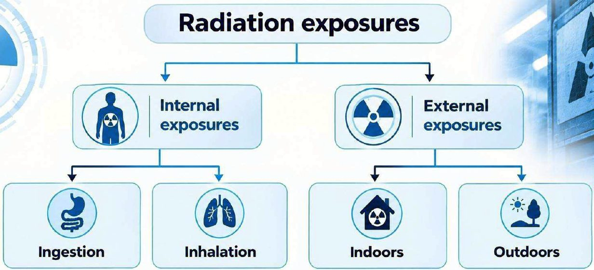
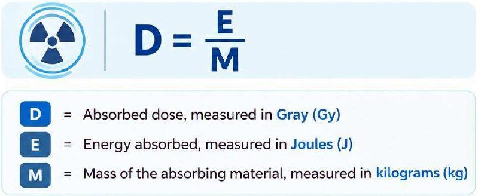
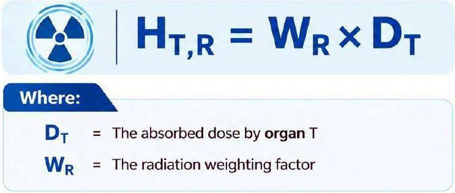
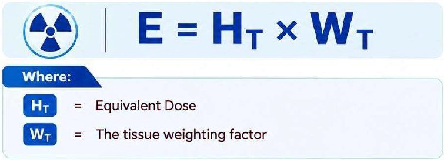
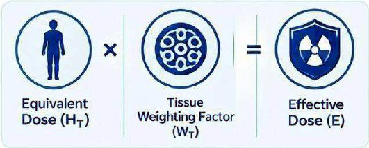
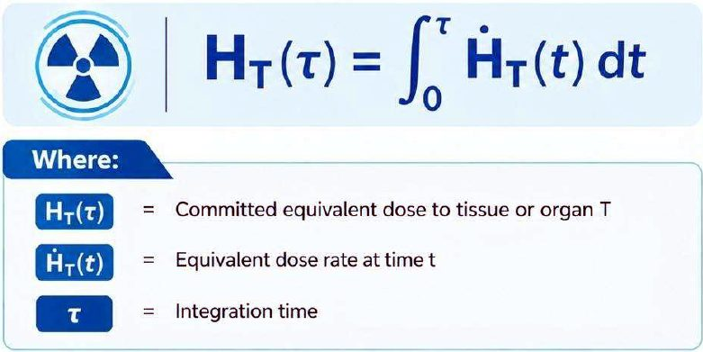
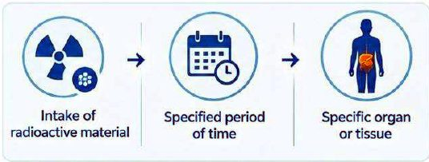
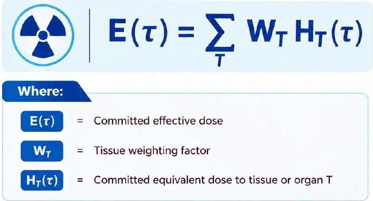

وحدات قياس الإشعاع والوحدات الدوليةRadiation Measurement Units & International SI Units
عملي · م02 · 7.7 دقيقةأقسام المحاضرة (10)
- مقدمةIntroduction
- النشاط الإشعاعيActivity
- أمثلة محلولة: النشاط الإشعاعيExample Problems: Activity
- التعرّضExposure
- الجرعة الممتصّةAbsorbed Dose (D)
- أمثلة محلولة: الجرعة الممتصّةExample Problems: Absorbed Dose
- الجرعة المكافئةEquivalent Dose (H)
- الجرعة الفعّالةEffective Dose (E)
- الجرعة المكافئة والفعّالة الملتزَم بهاCommitted Equivalent and Effective Dose
- الكيرماKERMA
مقدمةIntroduction
Radiation protection requires the use of specific physical quantities to describe radioactive sources, radiation fields, energy transfer, and the biological effect of ionizing radiation on the human body.
تتطلّب الوقاية من الإشعاع استعمال كميات فيزيائية محدّدة لوصف المصادر المشعّة، ومجالات الإشعاع، وانتقال الطاقة، والتأثير الحيوي للإشعاع المؤيِّن في جسم الإنسان.
- 1. Activityالنشاط الإشعاعي.
- 2. Exposureالتعرّض.
- 3. Absorbed Doseالجرعة الممتصّة.
- 4. Equivalent Doseالجرعة المكافئة.
- 5. Effective Doseالجرعة الفعّالة.
- 6. Committed Equivalent and effective Doseالجرعة المكافئة والفعّالة الملتزَم بها.
- 7. Kermaالكيرما (KERMA).

النشاط الإشعاعيActivity
Equation: A = λN
المعادلة: A = λN
It is typically expressed in units (SI) such as Becquerels (Bq).
يُعبَّر عنه عادةً بوحدات النظام الدولي (SI) مثل Becquerel (Bq) (البيكريل: وحدة النشاط الإشعاعي في النظام الدولي).
1 Bq = decay/second · That is: 1 Bq = one radioactive decay per second
1 Bq = decay/second، أي إن 1 Bq يساوي تحلّلاً إشعاعياً واحداً في الثانية.
This activity can be natural or human made and is important in various fields, including medicine, industry, and nuclear science.
هذا النشاط قد يكون طبيعياً أو من صنع الإنسان، وهو مهم في مجالات مختلفة منها الطب والصناعة والعلوم النووية.
أمثلة محلولة: النشاط الإشعاعيExample Problems: Activity
مثال: النشاط الإشعاعيExample Problem: Radioactive Activity
Equation: A = λN
المعادلة: A = λN
Problem Statement: A radioactive sample contains N = 10,000 nuclei. If the decay constant of the sample is λ = 0.05 s⁻¹, calculate the radioactivity (A) of the sample.
نص المسألة: عيّنة مشعّة تحتوي على N = 10,000 نواة. إذا كان ثابت التحلّل للعيّنة λ = 0.05 s⁻¹، فاحسب النشاط الإشعاعي (A) للعيّنة.
Given Data: N = 10,000 nuclei · λ = 0.05 s⁻¹
المعطيات: N = 10,000 نواة، λ = 0.05 s⁻¹
Calculation: A = λ × N · A = 0.05 × 10,000 · A = 500 Bq (decays/second)
الحساب: A = λ × N ← A = 0.05 × 10,000 ← A = 500 Bq (decays/second)
مثال 2: إيجاد عدد النوى (N)Example Problem 2: Finding Number of Nuclei (N)
Equation: N = A / λ
المعادلة: N = A / λ
Problem Statement: A radioactive material has an activity of A = 1,200 Bq. If its decay constant is λ = 0.04 s⁻¹, calculate the number of radioactive nuclei (N) present in the sample.
نص المسألة: مادة مشعّة نشاطها A = 1,200 Bq. إذا كان ثابت تحلّلها λ = 0.04 s⁻¹، فاحسب عدد النوى المشعّة (N) الموجودة في العيّنة.
Given Data: A = 1,200 Bq · λ = 0.04 s⁻¹
المعطيات: A = 1,200 Bq، λ = 0.04 s⁻¹
Calculation: N = A / λ · N = 1,200 / 0.04 · N = 30,000 nuclei
الحساب: N = A / λ ← N = 1,200 / 0.04 ← N = 30,000 nuclei
التعرّضExposure
The photons interact many times with atoms in the air each of which creates a free electron. These secondary electrons can themselves produce ionization and additional electrons.
تتفاعل الفوتونات مرات كثيرة مع ذرات الهواء، وكل تفاعل يُنتج إلكتروناً حرّاً. وهذه الإلكترونات الثانوية يمكنها هي نفسها أن تُحدث تأيُّناً وتُنتج إلكترونات إضافية.
Exposure measure the number of ionization in air.
يقيس التعرّض عدد حالات التأيُّن في الهواء.
Traditional unit is Roentgen (R).
الوحدة التقليدية هي Roentgen (R) (الرونتجن: الوحدة التقليدية للتعرّض).
التعرّض للإشعاعRadiation exposures

الجرعة الممتصّةAbsorbed Dose (D)
It is expressed in Gray (Gy).
يُعبَّر عنها بوحدة Gray (Gy) (الغراي: وحدة الجرعة الممتصّة).
1 Gray (Gy) represents the absorption of 1 joule of energy per kilogram of the material (1 Gy = 1 J/kg).
1 Gray (Gy) يمثّل امتصاص 1 جول من الطاقة لكل كيلوغرام من المادة (1 Gy = 1 J/kg).
D = E / M
المعادلة: D = E / M

أمثلة محلولة: الجرعة الممتصّةExample Problems: Absorbed Dose
مثال 1: حساب الجرعة الممتصّةExample Problem 1: Absorbed Dose Calculation
Equation: D = E / M
المعادلة: D = E / M
Problem Statement: A tissue sample with a mass of M = 2 kg absorbs E = 10 Joules of energy from ionizing radiation. Calculate the absorbed dose (D).
نص المسألة: عيّنة نسيج كتلتها M = 2 kg تمتصّ E = 10 جول من طاقة الإشعاع المؤيِّن. احسب الجرعة الممتصّة (D).
Given Data: E = 10 J · M = 2 kg
المعطيات: E = 10 J، M = 2 kg
Calculation: D = E / M · D = 10 / 2 · D = 5 Gy (J/kg)
الحساب: D = E / M ← D = 10 / 2 ← D = 5 Gy (J/kg)
مثال 2: إيجاد الطاقة الممتصّة (E)Example Problem 2: Finding Absorbed Energy (E)
Equation: D = E / M ⟹ E = D × M
المعادلة: D = E / M ⟹ E = D × M
Problem Statement: A patient receives a radiation dose of D = 4 Gy to an organ with a mass of M = 3 kg. How much radiation energy (E) was deposited in the organ?
نص المسألة: يتلقّى مريض جرعة إشعاعية D = 4 Gy في عضو كتلته M = 3 kg. ما مقدار طاقة الإشعاع (E) التي أُودِعت في العضو؟
Given Data: D = 4 Gy · M = 3 kg
المعطيات: D = 4 Gy، M = 3 kg
Calculation: E = D × M · E = 4 × 3 · E = 12 Joules (J)
الحساب: E = D × M ← E = 4 × 3 ← E = 12 Joules (J)
الجرعة المكافئةEquivalent Dose (H)
Not all radiation produces the same effects, the equivalent dose to an organ H in a tissue T associated with exposure to radiation R, is given by the following equation:
ليست كل الإشعاعات تُحدث التأثيرات نفسها. وتُعطى الجرعة المكافئة لعضو H في نسيج T المرتبطة بالتعرّض لإشعاع R بالمعادلة الآتية:
HT,R = WR × DT
HT,R = WR × DT

The SI unit of equivalent dose is the Sievert (Sv).
وحدة الجرعة المكافئة في النظام الدولي هي Sievert (Sv) (السيفرت: وحدة الجرعة المكافئة والفعّالة).
مثال: حساب الجرعة المكافئةExample Problem: Equivalent Dose Calculation
Equation: HT,R = WR × DT
المعادلة: HT,R = WR × DT
Problem Statement: An organ absorbs a radiation dose of DT = 3 Gy. If the radiation weighting factor for the type of radiation used is WR = 5, calculate the equivalent dose (HT,R) for the organ.
نص المسألة: يمتصّ عضو جرعة إشعاعية DT = 3 Gy. إذا كان عامل الترجيح الإشعاعي لنوع الإشعاع المستعمل WR = 5، فاحسب الجرعة المكافئة (HT,R) للعضو.
Given Data: DT = 3 Gy · WR = 5
المعطيات: DT = 3 Gy، WR = 5
Calculation: HT,R = WR × DT · HT,R = 5 × 3 · HT,R = 15 Sv (Sieverts)
الحساب: HT,R = WR × DT ← HT,R = 5 × 3 ← HT,R = 15 Sv (Sieverts)
الجرعة الفعّالةEffective Dose (E)
Not all tissues have the same sensitivity to radiation.
ليست كل الأنسجة متساوية في حساسيتها للإشعاع.
The effective dose can therefore be expressed by the following equation: E = HT × WT
لذلك يمكن التعبير عن الجرعة الفعّالة بالمعادلة الآتية: E = HT × WT


The SI unit of effective dose is the Sievert (Sv).
وحدة الجرعة الفعّالة في النظام الدولي هي Sievert (Sv).
مثال: حساب الجرعة الفعّالةExample Problem: Effective Dose Calculation
Equation: E = HT × WT
المعادلة: E = HT × WT
Problem Statement: An organ receives an equivalent dose of HT = 10 Sv. If the tissue weighting factor for this organ is WT = 0.2, calculate the effective dose (E).
نص المسألة: يتلقّى عضو جرعة مكافئة HT = 10 Sv. إذا كان عامل الترجيح النسيجي لهذا العضو WT = 0.2، فاحسب الجرعة الفعّالة (E).
Given Data: HT = 10 Sv · WT = 0.2
المعطيات: HT = 10 Sv، WT = 0.2
Calculation: E = HT × WT · E = 10 × 0.2 · E = 2 Sv (Sieverts)
الحساب: E = HT × WT ← E = 10 × 0.2 ← E = 2 Sv (Sieverts)
الجرعة المكافئة والفعّالة الملتزَم بهاCommitted Equivalent and Effective Dose
HT(τ) = ∫ ḢT(t) dt (integral from 0 to τ)
HT(τ) = ∫ ḢT(t) dt (التكامل من t = 0 إلى τ)


E(τ) = Σ WT HT(τ) (sum over T)
E(τ) = Σ WT HT(τ) (المجموع على كل الأنسجة T)

الكيرماKERMA
KERMA stands for: Kinetic Energy Released per unit Mass
KERMA اختصار لـ: الطاقة الحركية المتحرّرة لكل وحدة كتلة.
KERMA = Kinetic Energy Released / Mass
KERMA = Kinetic Energy Released / Mass، أي الكيرما = الطاقة الحركية المتحرّرة ÷ الكتلة.


المحاضرة مسموعة
نص الأستاذ بالإنكليزي مثل الأصل · 7.7 دقيقة. اضغط أي جملة تسمعها، أو مصطلح منقّط تسمع لفظه ومعناه.
Introductionمقدمة
Introduction
Radiation protection requires the use of specific physical quantities to describe radioactive sources, radiation fields, energy transfer, and the biological effect of ionizing radiation on the human body.
Activity
Exposure
Absorbed Dose
Equivalent Dose
Effective Dose
Committed Equivalent and effective Dose
Kerma
Activityالنشاط الإشعاعي
Activity
Activity is the measure of the rate at which radioactive materials decay and emit ionizing radiation.
Equation: A = λN
It is typically expressed in units (SI) such as Becquerels (Bq).
1 Bq = decay/second · That is: 1 Bq = one radioactive decay per second
This activity can be natural or human made and is important in various fields, including medicine, industry, and nuclear science.
Example Problems: Activityأمثلة محلولة: النشاط الإشعاعي
Example Problems: Activity
Example Problem: Radioactive Activity
Equation: A = λN
Problem Statement: A radioactive sample contains N = 10,000 nuclei. If the decay constant of the sample is λ = 0.05 s⁻¹, calculate the radioactivity (A) of the sample.
Given Data: N = 10,000 nuclei · λ = 0.05 s⁻¹
Calculation: A = λ × N · A = 0.05 × 10,000 · A = 500 Bq (decays/second)
Example Problem 2: Finding Number of Nuclei (N)
Equation: N = A / λ
Problem Statement: A radioactive material has an activity of A = 1,200 Bq. If its decay constant is λ = 0.04 s⁻¹, calculate the number of radioactive nuclei (N) present in the sample.
Given Data: A = 1,200 Bq · λ = 0.04 s⁻¹
Calculation: N = A / λ · N = 1,200 / 0.04 · N = 30,000 nuclei
Exposureالتعرّض
Exposure
The photons interact many times with atoms in the air each of which creates a free electron. These secondary electrons can themselves produce ionization and additional electrons.
Exposure is the total electric charge on the ions produced in a given mass of air.
Exposure measure the number of ionization in air.
Traditional unit is Roentgen (R).
Radiation exposures
Absorbed Dose (D)الجرعة الممتصّة
Absorbed Dose (D)
Absorbed dose is the mean energy deposited by ionizing radiation to matter per unit mass.
It is expressed in Gray (Gy).
1 Gray (Gy) represents the absorption of 1 joule of energy per kilogram of the material (1 Gy = 1 J/kg).
D = E / M
Example Problems: Absorbed Doseأمثلة محلولة: الجرعة الممتصّة
Example Problems: Absorbed Dose
Example Problem 1: Absorbed Dose Calculation
Equation: D = E / M
Problem Statement: A tissue sample with a mass of M = 2 kg absorbs E = 10 Joules of energy from ionizing radiation. Calculate the absorbed dose (D).
Given Data: E = 10 J · M = 2 kg
Calculation: D = E / M · D = 10 / 2 · D = 5 Gy (J/kg)
Example Problem 2: Finding Absorbed Energy (E)
Equation: D = E / M ⟹ E = D × M
Problem Statement: A patient receives a radiation dose of D = 4 Gy to an organ with a mass of M = 3 kg. How much radiation energy (E) was deposited in the organ?
Given Data: D = 4 Gy · M = 3 kg
Calculation: E = D × M · E = 4 × 3 · E = 12 Joules (J)
Equivalent Dose (H)الجرعة المكافئة
Equivalent Dose (H)
Not all radiation produces the same effects, the equivalent dose to an organ H in a tissue T associated with exposure to radiation R, is given by the following equation:
HT,R = WR × DT
The SI unit of equivalent dose is the Sievert (Sv).
Example Problem: Equivalent Dose Calculation
Equation: HT,R = WR × DT
Problem Statement: An organ absorbs a radiation dose of DT = 3 Gy. If the radiation weighting factor for the type of radiation used is WR = 5, calculate the equivalent dose (HT,R) for the organ.
Given Data: DT = 3 Gy · WR = 5
Calculation: HT,R = WR × DT · HT,R = 5 × 3 · HT,R = 15 Sv (Sieverts)
Effective Dose (E)الجرعة الفعّالة
Effective Dose (E)
Not all tissues have the same sensitivity to radiation.
The effective dose is the equivalent doses for each organ or tissue in the organism, multiplied by its tissue weighting factor (WT)
The effective dose can therefore be expressed by the following equation: E = HT × WT
The SI unit of effective dose is the Sievert (Sv).
Example Problem: Effective Dose Calculation
Equation: E = HT × WT
Problem Statement: An organ receives an equivalent dose of HT = 10 Sv. If the tissue weighting factor for this organ is WT = 0.2, calculate the effective dose (E).
Given Data: HT = 10 Sv · WT = 0.2
Calculation: E = HT × WT · E = 10 × 0.2 · E = 2 Sv (Sieverts)
Committed Equivalent and Effective Doseالجرعة المكافئة والفعّالة الملتزَم بها
Committed Equivalent and Effective Dose
The committed equivalent dose is the total equivalent dose that will be received by a specific organ or tissue over a specified period of time following the intake of radioactive material.
HT(τ) = ∫ ḢT(t) dt (integral from 0 to τ)
The committed effective dose is the sum of the committed equivalent doses to all organs and tissues, each multiplied by its tissue weighting factor WT.
E(τ) = Σ WT HT(τ) (sum over T)
KERMAالكيرما
KERMA
KERMA stands for: Kinetic Energy Released per unit Mass
KERMA = Kinetic Energy Released / Mass
KERMA is defined as the sum of the initial kinetic energies of all charged particles liberated by ionizing radiation (e.g., X-rays, gamma rays, or other forms of ionizing radiation) per unit mass of the irradiated material.
28 سؤال من نص المحاضرة، ويّا «ليش صح» بعد كل جواب.
ابدأ الاختباراضغط أي مصطلح منقّط تسمع لفظه ومعناه.
PDF ثنائي اللغة: نص الأستاذ + الترجمة + الخلاصة + الأسئلة · 1.2 MB
تحميل الملف